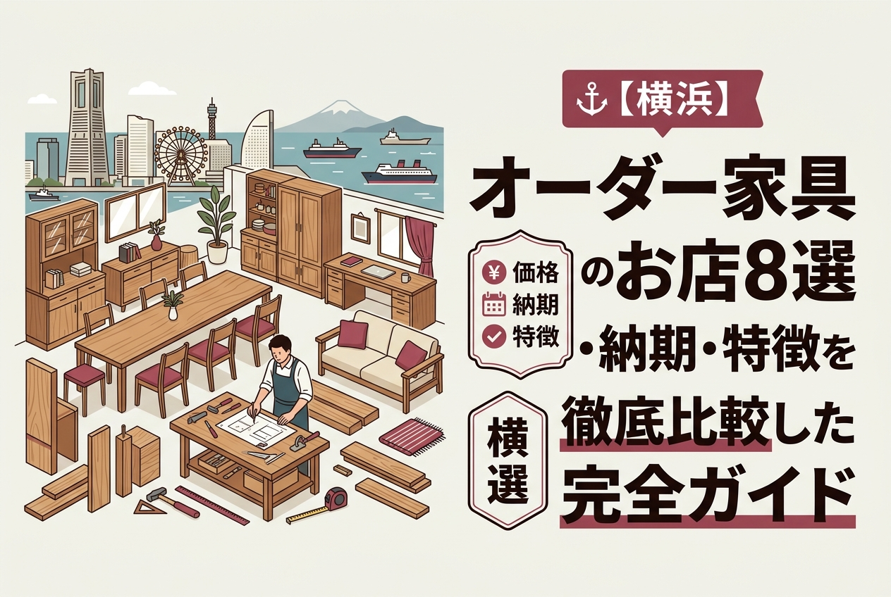
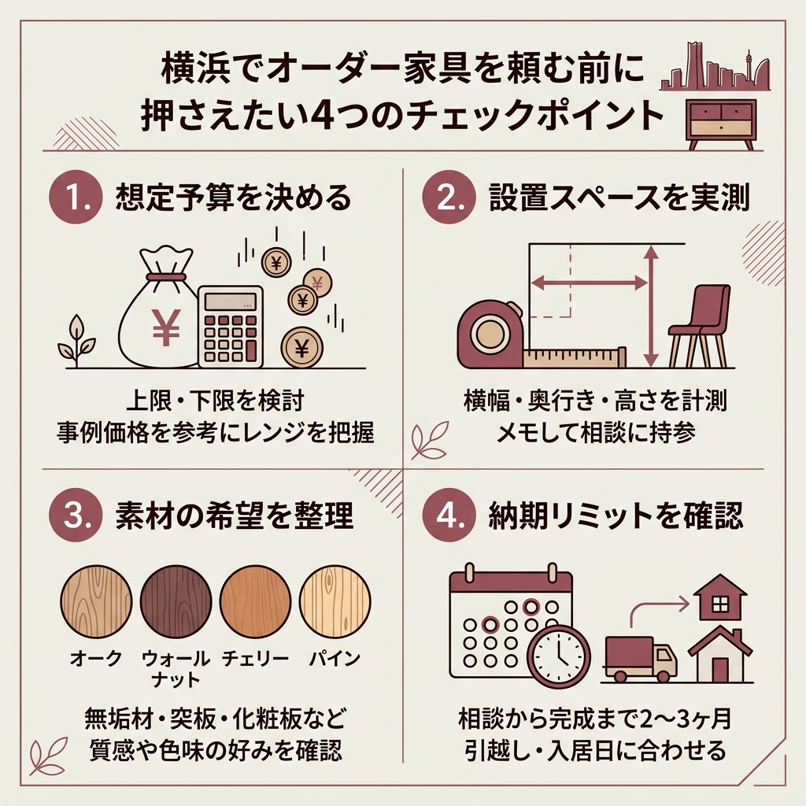
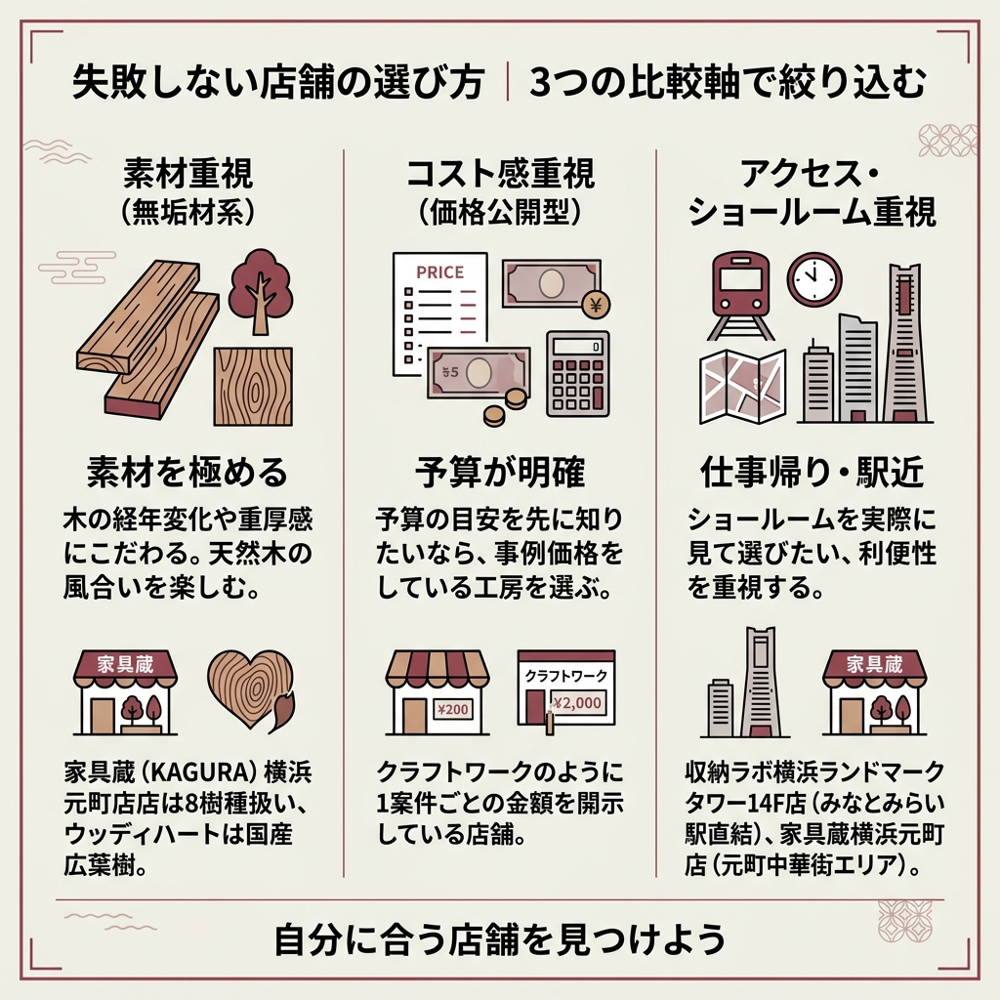

【横浜】オーダー家具のお店8選｜価格・納期・特徴を徹底比較した完全ガイド

「横浜でオーダー家具を頼みたい。でも、お店が多すぎてどこに相談すればいいのかわからない」。
検索してみても、ふわっとした紹介ばかりで価格帯も注文フローもいまいちつかめない。
この記事では、横浜エリアで相談できるオーダー家具の専門店8社を、公式サイトの情報だけをもとに整理しました。
住所・価格・納期・得意ジャンルをフラットに並べているので、比較検討の最初の一歩としてそのまま使えます。
横浜にオーダー家具のお店ってどれくらいあるの？結局どこに頼めばいいのか決められなくて…
専門工房から無垢材ブランドの直営店まで幅広くあります。まずは「素材」「価格感」「アクセス」の3点で絞ると一気に選びやすくなりますよ。
- 横浜で相談できるオーダー家具専門店8社の特徴と住所
- 各社の公表されている価格帯・注文フロー・納期
- 失敗しない店舗選びのチェックポイント
横浜のオーダー家具店8社を一覧で比較
最初に全体像を掴んでもらうため、この記事で紹介する8社をまとめて並べました。
各店舗の住所・得意分野・公式サイトで公表されている価格感を、できるだけそのまま転記しています。
| 店舗 | 拠点 | 強み |
|---|---|---|
| クラフトワーク | 横浜市内 | オーダー家具専門店／事例の価格を公式公開 |
| ウッディハート | 青葉区桜台 | 国産広葉樹／10km圏内見積無料 |
| 家具蔵 横浜元町店 | 中区元町1-22-1 | 無垢材オーダー／8樹種から選択 |
| 収納ラボ | 西区みなとみらい | 8,000件超の実績／10年保証 |
| 神奈川住空間 ARUS | 中目黒・千葉SR | 規格化された壁面収納ブランド |
| ザ・ペニーワイズ | 横浜市内事例あり | 天然木4素材から選べるオリジナル |
| 横浜家具製作所 | 横浜 | 設計〜取付まで自社一貫 |
| Y.P.O（ヤマシタ） | 東京・神奈川 | 設計・施工・納品・管理の一貫対応 |
この表で気になる1〜2社に目星をつけたうえで、後半の各店舗セクションを読み比べてもらうと効率的です。
そもそもオーダー家具って何？既製品との違いをさくっと整理

知る人ぞ知るモデルルーム展示品しか置いてないリユース家具屋②ディグる。#お新古市場 #リユース家具
オーダー家具とは、部屋の寸法や希望の素材・デザインに合わせて一点ずつ作ってもらう家具のことです。
既製品のように「近いサイズに妥協する」必要がなく、ミリ単位で空間にぴったり収めてもらえるのが最大の魅力と言えます。
フルオーダーとセミオーダーの立ち位置
ひとくちに「オーダー家具」と呼んでも、ゼロから設計するフルオーダーもあれば、規格化されたパーツを組み合わせて作るセミオーダーもあります。
たとえば神奈川住空間のブランド「ARUS（アルス）」は、サイズ・カラー・仕様オプションの全パーツを規格品にすることで、フルオーダー感覚とコスト調整を両立させる仕組みを公式サイトで説明しています。
一方でクラフトワークや家具蔵、ウッディハートのような専門工房は、木材選定から設計までを一から手がけるフルオーダー寄りのスタイルです。
どちらが優れているという話ではなく、予算と求めるオリジナリティ次第で選ぶべき方向が変わります。
オーダー家具を選ぶ人が増えている理由
マンションのリフォームや注文住宅の打ち合わせで「壁面収納やキッチン収納だけはこだわりたい」という声は珍しくありません。
柱やエアコンの出っ張りがあるとデッドスペースが生まれがちで、それを既製品で埋めるのはどうしても難しいからです。
神奈川住空間は公式サイトで「柱型やエアコンなどの配置を考慮しながら、デッドスペースを作らず空間にピッタリサイズの上質な壁面収納を創り出す」と説明しています。
ザ・ペニーワイズの横浜市A邸の事例では、新築戸建にオーク材のペニンシュラキッチンとシューズクローゼット、TVボードをセットで納品。食器洗い乾燥機はMiele（ミーレ）の60cm幅フルオープンを採用し、コンロ横にはHAFELE（ハーフェレ）のスライドバスケット（幅110mm・160mm・210mm）を選べるようにしたと公式事例で紹介されています。
既製品ではまず組み合わせられない設備とサイズを、一度の打ち合わせで詰めていけるのがオーダー家具の本領です。

横浜でオーダー家具を頼む前に押さえたい4つのチェックポイント
店舗を比較する前に、自分の頭を整理するためのチェック項目をまとめておきます。
この4つを意識するだけで、あとで「聞き忘れた」「想定より高かった」というトラブルをかなり防げます。
- 想定予算の上限と下限を事前に決めているか
- 設置予定の空間を実測してメモしてあるか
- 無垢材・突板・化粧板など「素材の希望」があるか
- 納期のリミット（引越し日・完成日）が明確か
価格の目安は「公式の事例価格」を基準に
オーダー家具の価格は条件によって大きく振れますが、公式サイトに価格を掲載している工房の事例を見るのが一番の早道です。
たとえばクラフトワークは制作実績のページで、具体的な家具と金額をセットで公開しています。
- オーク材のカウンター収納：¥800,000-
- オーク材の造作カウンターサイドボード：¥530,000
- 節ありオークのカップボード：¥670,000-
- 壁面ソファのヌック：¥1,200,000-
- オーク材のオーダーキッチン：¥2,000,000-（設備機器費用別途）
- クルミ材でのトータルコーディネート：¥3,800,000-（配送設置工事別途）
収納単体なら50万円前後から、キッチンや造作まで含めた総合コーディネートだと数百万円規模になるというレンジ感が見えてきます。
素材で雰囲気と予算は大きく変わる
素材選びは仕上がりの印象を決める最大のポイントです。
家具蔵（KAGURA）の公式サイトでは、ウォールナット・チェリー・ナラ・ホワイトアッシュ・ハードメープル・タモ・ケヤキ・サペリという8樹種の無垢材を取り扱いとして紹介しています。
それぞれ木肌の色味や経年変化が違うため、ショールームで実物を触って確認するのが失敗しないコツです。
ザ・ペニーワイズのようにオーク・パイン・チェリー・ウォールナットの4素材から選ぶ構成のブランドもあるため、候補を絞り込むと比較しやすくなります。
納期は「相談から完成まで」で見る
ウッディハートの注文フローを例にすると、「04.お届け」の項目に「6週間〜で完成！お客様のもとへお届けいたします」と記載されています。
つまり設計確定後から最低1.5ヶ月は製作期間を見ておくイメージです。
打ち合わせ・デザイン確定に2〜4週間、そこから製作で6週間と考えると、全体で2〜3ヶ月は余裕を見ておきたいところ。
引越しや新築入居の日程が決まっている場合は、最初の相談段階でデッドラインを共有しておくと安心です。
アフターサービス・保証の有無
意外と見落とされがちなのが、納品後の修理や調整に応じてくれるかどうかです。
収納ラボは公式サイトで「納品後も長く安心してお使いいただけるよう、10年保証や充実したアフターサービスでオーダー家具との快適な暮らしをサポートします」と明言しています。
ウッディハートも「05.アフターサービス 納品後の不具合の対応はもちろん、些細なことでもお気軽にご連絡ください」とサポートを案内しており、長期で付き合える工房を選びたい人には心強い材料になります。
価格も納期も「ケースバイケース」と表記されるケースがほとんどです。本記事で取り上げた金額はあくまで公式サイト公開時点の事例で、現時点の料金は各店舗に直接問い合わせてください。
クラフトワーク｜横浜のオーダー家具専門店で価格事例が豊富
 出典: craft-work.biz
出典: craft-work.bizクラフトワークは横浜を拠点にするオーダー家具専門店で、この記事で紹介する中でもっとも「値段が見える」工房です。
難易度の高いクラシック家具制作を経験してきた職人と、さまざまな分野のデザインを経験したデザイナーが組んで、耐久性と美しさを両立した家具を提供していると公式サイトで説明されています。
木材を主軸にしつつ、提携工場やクリエーターとの連携であらゆる素材・デザインに対応していて、家庭用だけでなくオフィスや店舗の什器まで幅広い依頼に応えられるのが強みです。
価格事例と得意ジャンル

クラフトワーク公式の「WORKS 制作実績」には、具体的な家具と価格がセットで掲載されています。
オーク材のカウンター収納が80万円、壁面ソファのヌックが120万円、クルミ材でのトータルコーディネートに至っては380万円（配送設置工事別途）と、価格帯は幅広め。
キッチン周りも得意で、オーク材のオーダーキッチンは200万円〜（設備機器費用別途）で紹介されています。
「まずは予算感を知りたい」という段階の人にとって、ここまで細かく価格が載っている工房は貴重です。
- 公式サイトに事例の実価格が掲載されていて比較しやすい
- 家具だけでなくキッチン・造作まで一社で完結
- 「こんな物できますか？」と大まかな相談でも対応と公式で明言
6ステップの注文フロー
クラフトワーク公式では「HOW TO ORDER」として6つのステップを案内しています。
まずは問い合わせから。予算だけの相談もOK。
現地の寸法や雰囲気を確認。
希望を踏まえたデザイン案の提示。
素材・仕様を詰めて正式な見積へ。
工房で一点ずつ製作。
設置まで対応し完成。
「しつこい売り込みなどは一切致しませんので安心してご相談ください」とも案内されており、初回の敷居は低めに設計されています。
詳細はクラフトワーク公式サイトで最新の実績と連絡方法を確認してください。
ウッディハート｜青葉区桜台の国産広葉樹にこだわる老舗
青葉区桜台に構えるウッディハートは、国産広葉樹と日本の職人にこだわる工房です。
運営会社は有限会社ハート、代表は木村浩之さん。1987年の「アスティック」時代から続いており、2003年にウッディハートを設立した流れが公式サイトに記載されています。
店舗情報とアクセス
公式サイトに掲載されている会社情報をそのまま引用します。
- 会社名：有限会社ハート
- 住所：神奈川県横浜市青葉区桜台30番6号
- フリーダイヤル：0120-79-0815
- FAX：045-986-0212
- 代表者：木村浩之
- 定休日：水曜日と第2火曜日（公式お知らせより）
「オーダー家具 10km圏内お見積もり無料」と公式で打ち出しており、青葉区周辺に住んでいる人には心理的なハードルが低い工房です。
旭川・飛騨・静岡の国産家具とも連携
ウッディハートのもう一つの顔は、国産家具の取り扱い店でもある点です。
公式サイトには「地産地消を大切にするJAPAN MADE PRODUCTS」として、旭川（匠工芸／クリエイトファニチャー／家具工房ドリーム／北匠工房）、飛騨高山（飛騨産業／柏木工）、静岡（久和屋）といった国内ブランドとのつながりが紹介されています。
「もともと自然いっぱいの北海道で育った代表木村は、国内の広葉樹を使うことが、日本の自給率、森林保護につながると考えています」との記述も印象的で、選ぶ素材にポリシーがはっきりしている工房です。
5ステップ、納期は6週間〜
ご来店、またはお宅に訪問にて打ち合わせ可能。
色・素材・収納・スペースなどの希望からラフスケッチを作成。
製図を最終確認して発注。
6週間〜で完成、お客様のもとへ。
納品後の不具合対応も受け付け。
「家族構成やライフスタイルが変化しても愛着をもってご使用いただけるよう、飽きのこない普遍的なデザインを提供していきます」と公式に書かれている通り、流行を追うタイプの工房ではありません。一生もの感覚で長く使いたい人向けの選択肢と言えます。
最新情報はウッディハート公式サイトで確認してください。
家具蔵（KAGURA）横浜元町店｜無垢材オーダー家具のスペシャリスト
 出典: www.kagura.co.jp
出典: www.kagura.co.jp「無垢材で一生使える家具が欲しい」という人には、家具蔵（KAGURA）横浜元町店が有力候補になります。
公式サイトは「自然の風合いを楽しむ 無垢材家具」をメインメッセージに掲げ、CRAFTSMANSHIP・SOLID WOOD・FINISHING・AFTERCAREの4軸で家具づくりへのこだわりを整理しています。
横浜元町店の基本情報

- 住所：〒231-0861 神奈川県横浜市中区元町1-22-1
- 電話：045-222-2777
- 営業時間：10:30〜19:00
- 定休日：水曜日
みなとみらい方面とは別に、元町のショッピングエリア側で気軽に立ち寄れる立地です。
取り扱う8樹種と商品カテゴリ
KAGURAは無垢材オーダー家具を中心に展開しており、公式サイトで紹介されている樹種だけでも8種類あります。
- ウォールナット：空間に重厚さと彩りをもたらす豊かなグラデーション
- チェリー：時の流れに磨かれた木肌の滑らかさと本物の艶
- ナラ：個性豊かな表情を見せる多彩な木目
- ホワイトアッシュ：清潔感あふれる木肌
- ハードメープル：絹糸のような光沢
- タモ：繊細さと大胆さを兼ね備えた流れるような木目
- ケヤキ：生命の躍動を感じさせるダイナミックな木目
- サペリ：豊かな煌めきを秘めた木目
商品カテゴリも幅広く、無垢材チェア、一枚板・共木テーブル、デザインテーブル、無垢材ソファ、無垢材ベッド、収納家具、無垢材アクセサリー／仏壇までを扱っています。
店頭では「家具へのこだわり」「無垢材家具の魅力」「永く使用してもらうための仕上げ」「アフターメンテナンス」という4つの視点で、スタッフから説明を受けられる構成です。
無垢材って高いイメージがあるけど、ちょっとのぞいて見るだけでも大丈夫ですか？
KAGURAの公式サイトには来店予約やカタログ請求の導線があります。いきなり見積を出す必要はないので、まずはショールームで木肌を触ってみるのがおすすめです。
カタログや来店予約は家具蔵（KAGURA）公式サイトから申し込めます。
収納ラボ｜みなとみらいに構える実績8,000件超のメーカー直営SR
 出典: www.estorage.co.jp
出典: www.estorage.co.jp「数字で比較したい」という人に推したいのが収納ラボです。
公式サイトは「収納ラボは、オーダー家具の専門メーカーです。お客様の暮らしに寄り添い、空間やライフスタイルにぴったりな収納をご提案。機能性・デザイン性を両立したオーダー家具をミリ単位精度でお作りします」と紹介しています。
横浜ショールームの立地
横浜ショールームは、みなとみらいの象徴的な高層ビルの中にあります。
〒220-8114 神奈川県横浜市西区みなとみらい2-2-1 横浜ランドマークタワー14F
銀座・横浜・名古屋の3店舗と大阪のギャラリー1店を展開中で、このうち横浜はランドマークタワーのアクセスの良さが魅力。
4つの特徴と10年保証
収納ラボが公式サイトで掲げている特徴は、次の4つです。
- 品質にこだわるオーダー家具：ヨーロッパをはじめ世界中から素材や機能パーツを厳選し、最新鋭の製造設備を備えた自社工場で製造
- 豊富な素材・色・パーツ：人工素材から天然素材まで幅広く、取手など装飾パーツも選択可能
- 安全を守る耐震施工：独自の施工技術で家具を壁面固定
- 暮らしに寄り添う永年サポート：10年保証とアフターサービス
「8,000件以上の豊富な実績」と公式で公表していて、事例数の多さを前面に出しています。
デッドラインのあるリフォームや新築引き渡しに合わせたい人には、実績数の多い直営メーカーは心理的な安心感があります。
- みなとみらい近辺で気軽にショールームに寄りたい人
- 自社工場一貫生産にこだわりたい人
- 納品後の保証・修理対応を重視する人
事例数の多さは収納ラボ公式サイトで実際に閲覧して確かめてみてください。
神奈川住空間 ARUS（アルス）｜規格化で実現するリーズナブルなオーダー収納
 出典: www.jyukukan.com
出典: www.jyukukan.com神奈川住空間が手がけるオリジナル家具ブランドが「ARUS（アルス）」です。
フルオーダー感覚を残しつつコストを抑えるために、サイズ・カラー・仕様オプションのすべてのパーツを規格品にしたのが大きな特徴になります。
アルスの4つの強み
公式サイトでは、アルスの特徴が4つにまとめられています。
- 住まいの空間にピッタリサイズ：柱型やエアコンの配置を考慮してデッドスペースを作らない
- 高品質なのにリーズナブル：規格品のパーツを組み合わせることでコストを抑制
- 豊富なカラーバリエーション：木目柄を中心に多彩な扉カラーをラインアップ
- 高品質で地震に強い家具：低圧メラミン化粧板（MFC）を使用し壁面に直接ビス固定
「ホルムアルデヒド発散等級の最上位規格」と明記されているので、シックハウスが気になる家庭にも向きます。
また「設置後もライフスタイルの変化に応じて、機能的な引出しや棚板をプラスしたり、扉のカラーを変えてお部屋のイメージチェンジをしたり、お好みに合わせて使い方を変えることができます」と、後から追加オプションできる設計思想も公表されています。
ショールームは中目黒と千葉の2ヶ所。横浜から近場で実物を確かめたい場合は中目黒のショールームが候補です。
「アルス」のインテリアコーディネーターがお客様のライフスタイルに合わせたインテリアプランをご提案します。収納家具をはじめカーテンやフローリング、エコカラットなどトータルな提案をできるのが「アルス」の強みです。
神奈川住空間 公式サイトより
詳細は神奈川住空間 オーダー家具ARUSで確認できます。
ザ・ペニーワイズ｜4樹種×複数シリーズから選べるオーダーファニチャー
 出典: www.pennywisefurniture.com
出典: www.pennywisefurniture.comザ・ペニーワイズ（THE PENNY WISE）は、天然木にこだわったオーダーファニチャーを展開するブランドです。
公式サイトでは、オーク材・パイン材・チェリー材・ウォールナット材の4樹種を軸に、Penny Wise、colonalteak（コロニアルチーク）、Lloyd Loom（ロイドルーム）、Original Oak（オリジナルオーク）といったシリーズが紹介されています。
テーブル・チェア・キャビネット・ローボード・チェスト・ブックケース・デスク・ベッド・ミラーまで、カテゴリは横断的。
横浜市A邸の事例ページでは、新築戸建のペニンシュラキッチン、シューズクローゼット、TVボードを一括で製作した施工記録が公開されており、工務店と連携した造作レベルの依頼にも対応しています。
事例の詳細はザ・ペニーワイズ 横浜市A邸事例ページを参考にしてみてください。
横浜家具製作所｜設計から取付まで自社スタッフが一貫
横浜家具製作所は、工場併設で設計・採寸・製作・取付まで自社スタッフが一貫して行う工房です。
「規格品では収まらない機能や喜びを造形」「長年の経験から培ったノウハウと施工技術でお客様のご要望にお応えします」というメッセージを公式トップに掲げています。
オリジナル商品やノベルティグッズなどの木工製品を企画段階から相談できるのも特徴のひとつ。
価格表や具体的な事例金額は公開されていないため、予算感を知りたい場合は直接問い合わせてください。
公式情報は横浜家具製作所から確認できます。
ヤマシタ・プランニング・オフィス（Y.P.O）｜東京・神奈川を中心に一貫対応
有限会社ヤマシタ・プランニング・オフィスは、東京・神奈川を中心にオーダー家具の設計・施工・納品・管理を行う会社です。
公式サイトには、2020年にスマートフォンやタブレットにも対応したリニューアルを実施したことや、「ものづくりが好きな方や、人に喜んでもらうのが好きな方」を集めた人材募集のメッセージが掲載されています。
価格や事例の詳細は公式サイト上では公開されていないため、相談内容を先にまとめたうえで問い合わせるのがおすすめです。
詳細はY.P.O 公式サイトで確認してください。

失敗しない店舗の選び方｜3つの比較軸で絞り込む
8社並べると目移りしてしまうので、選び方の指針を3つに絞ってまとめておきます。
「何を重視したいか」を決めてから動くと、相談の手戻りが一気に減ります。
素材重視なら無垢材系を
木の経年変化や重厚感にこだわるなら、無垢材を前面に出している店舗が軸になります。
家具蔵（KAGURA）横浜元町店は8樹種を扱い、ウッディハートは国産広葉樹にこだわっていて、どちらも素材のこだわりを公式に明言しています。
コスト感を先に知りたいなら価格公開型を
「とにかく予算が読めないと怖い」という場合は、事例価格を公開している工房を最初に選ぶのが合理的です。
クラフトワークのように1案件ごとの金額を開示している店舗は、見積前の心理的なハードルを下げてくれます。
アクセス・ショールームの便利さで選ぶ
仕事帰りにちょっと寄りたいんですが、駅から近い店舗ってありますか？
みなとみらい駅直結レベルの立地なら収納ラボの横浜ランドマークタワー14F店、元町中華街エリアなら家具蔵の横浜元町店が候補になりますよ。
ショールームを実際に歩いて選ぶなら、横浜駅周辺から動きやすい収納ラボと家具蔵の2社を比較検討の起点にするとスムーズです。
- 設置スペースの実測値（幅・奥行き・高さ）
- 設置場所の写真（スマホで数枚）
- 予算の上限・下限
- 納期のリミット（引越し日・新築入居日など）
- 希望素材のイメージ（雑誌の切り抜き・SNSの画像など）
よくある質問（FAQ）
まとめ｜横浜のオーダー家具は「見積ハードルが低い順」に並べると動きやすい
- 横浜で相談できるオーダー家具店は、専門工房から無垢材ブランドの直営店まで多彩
- 事例価格が公表されているクラフトワークは相場感を掴む起点に最適
- アクセス重視なら収納ラボ（ランドマークタワー14F）と家具蔵 横浜元町店
- 国産広葉樹にこだわるならウッディハート（青葉区桜台）
- 相談前には設置スペースの実測・予算・納期リミットを必ず整理しておく
「どこが正解か」ではなく「自分の優先順位に合うのはどこか」で選ぶのが、オーダー家具の失敗しない頼み方。
まずは2〜3社に絞って同じ要件を投げ、返ってきた提案を並べてみてください。
公式サイトに一通り目を通してみると、工房ごとの「らしさ」が意外とはっきり出ていて、それだけで候補がぐっと絞れるはずです。